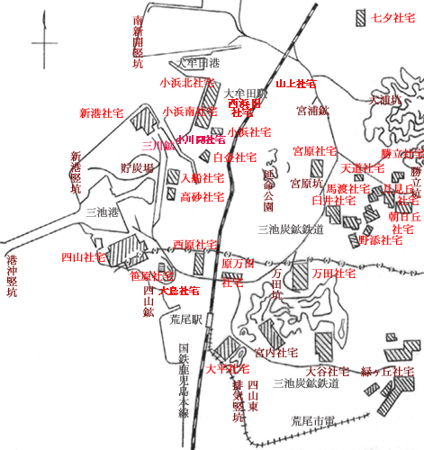

（地図上もクリックしてみてください。なお、これら炭鉱社宅は一部を除き現存しません。）
|
 熊本県荒尾市による昭和３５年１０月１日現在「行政区別人口および世帯数一覧表」によると、炭鉱社宅は、福岡県大牟田市と熊本県荒尾市に集中していた。その荒尾市には、主に三川鉱坑員用として緑ヶ丘社宅及び大谷 社宅、四山鉱坑員用として宮内社宅が、三井グリーンランド遊園地周辺に所在し、万田坑付近に万田社宅西（西町、妙見町、山 下町、土手町）、万田社宅東（宮坂町、仲町、山上町、万町、通町、辻町）、大平社宅、原万田社宅があり、四山鉱付近に大島 社宅、笹原社宅、西原社宅が所在していた。
平成１７年１月末現在にあっては、
|